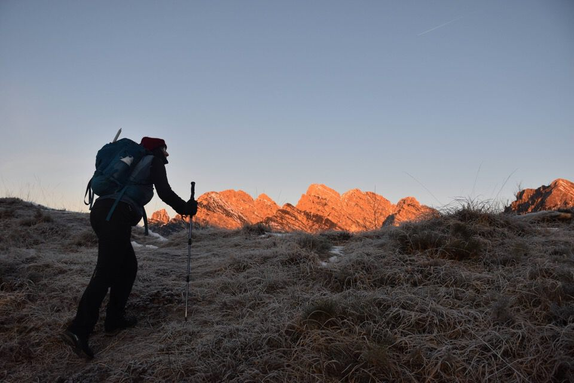
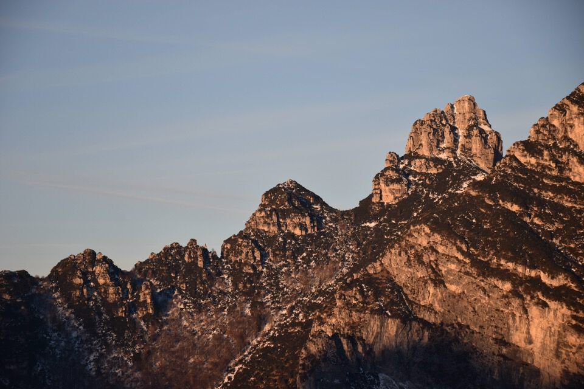
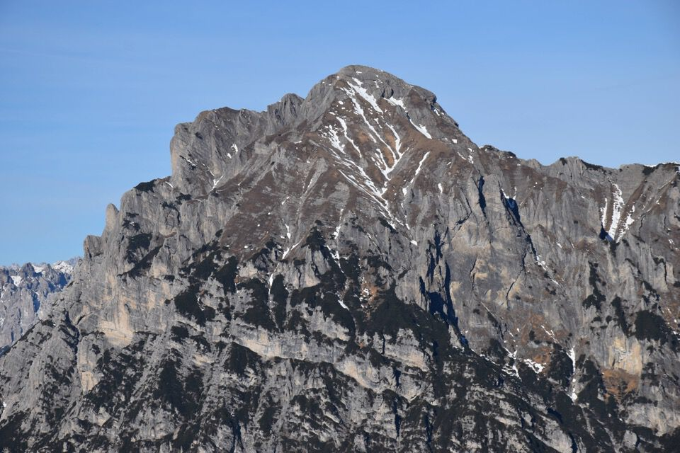
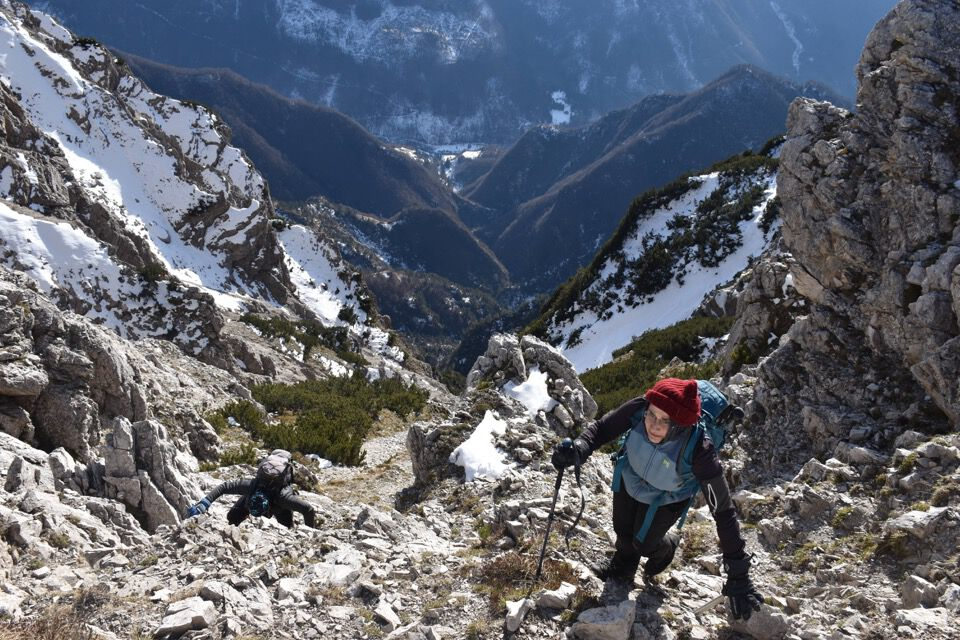
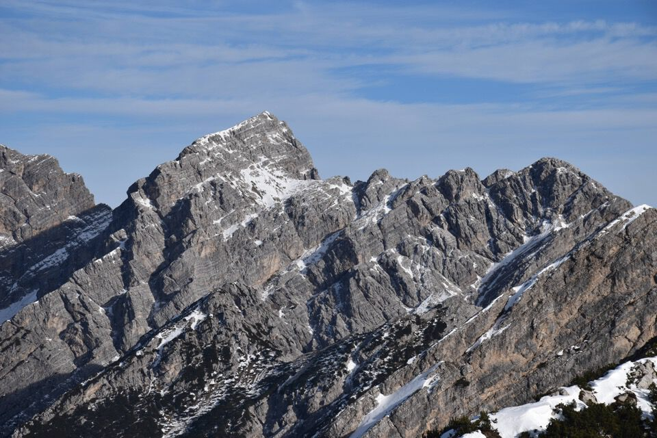
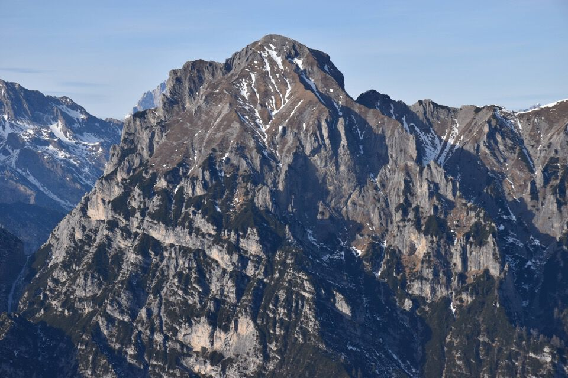

Salita invernale per cresta alla quota principale (q2032) delle Cime Pale de Ciuone: bellissima cima, assolutamente centrale fra le montagne di Claut, dove si sente un grande senso di isolamento.
Forcella Thita: lassù Merle da On.
Da segnalare l'apertura del nuovo sentiero truoi de thep che percorre la cresta dirimpetta a quella di San Gualberto.
Uno sguardo verso la misteriosa val Ciolesàn; in centro la nostra cima, a dx cima Ciolesàn.
Arriviamo in forcella Valtremuoia giusto in tempo per vedere le montagne infuocate dal sole.
E ora sù verso il Merle da On.
La cresta è panoramicissima: qui la Punta Pisandola e la Torre Vacalizza.
Neanche le nove e mezza e siamo già in cima al Merle da On: pensavo fossimo presto, invece torneremo col buio...
Bellissima la visuale su Viéres, Susàna-Spalaviér e Borsàt.
Ecco la cresta che ci apprestiamo a percorrere.
Dettaglio della Cima Ciolesàn, sottolineata dall'omonima cengia; il cimotto a sx è il Ciol de Sas.

Merle da On visto da un'altra prospettiva.
La cresta è molto bella e sempre facile: peccato per la pessima qualità della neve, che ci ha fatto penare non poco.
La visuale è eccezionale, quante cose da guardare!
Stupendo il Turlón.
Molto bello l'anfiteatro a Sud delle due quote principali (q1985 e q2032) delle Pale de Ciuone.
Qualche passaggio delicato per via delle neve inconsistente.
Spettacolo!
Dalla cima verso la val Settimana.
La continuazione della cresta verso Est: cima Ciolesàn.

Cornagèt e Frata de Barbìn.
Cornagèt: dente superbo.
Il Turlón con la val de Stale da cui voglio salire.
La cresta percorsa.
Una bella soddisfazione aver percorso questo itinerario il 4 di gennaio! Peccato però che la strada della val Settimana sia ghiacciata, quindi niente discesa «veloce» in val Piovìn: tocca rifare la cresta a ritroso, cosa che si rivelerà penosa e assolutamente sfiancante.
Torniamo giù: in fondo alla val Ciolesàn il parcheggio di Lesis, da cui l'anno scorso guardavo queste crode fantasticando di trovarmici sopra: comunque non vedo l'ora di risalirla la val Ciolesàn, lungo gli itinerari riesumati dal solito Luca Basso.
Forcella Cadìn, col Ciampóns e dietro Pinzàt-Domanzòn.
Scendiamo dal Merle da On con le ultime luci: peccato per la foto orribile, c'era una luce bellissima.
Il Pramaggiore, ardente.